ROYAL-CARS Import Aut z USA i Kanady
Kamil
biuro@royal-cars.pl
Propozycja importu
Cena Pod dom – zawiera koszt transportu oraz opłaty celno-skarbowe. Cena nie uwzględnia akcyzy i ewentualnych napraw.
Możemy zająć się całym procesem importu i przygotowania samochodu do jazdy:
✓ wyszukujemy odpowiedni samochód na aukcjach w USA
✓ sprawdzamy historię i dokumentację pojazdu
✓ analizujemy zdjęcia i zakres uszkodzeń
✓ przygotowujemy kalkulację całego przedsięwzięcia
✓ ustalamy maksymalną kwotę licytacji
✓ licytujemy samochód w imieniu klienta
✓ organizujemy transport w USA
✓ organizujemy transport morski do Europy
✓ zajmujemy się odprawą celną i formalnościami
✓ organizujemy transport samochodu do Polski
✓ możemy zorganizować kompleksową naprawę samochodu
✓ naprawiamy uszkodzenia mechaniczne i blacharsko-lakiernicze
✓ przygotowujemy samochód do rejestracji
✓ możemy przygotować samochód dla klienta „na gotowo”, gotowy do odbioru i jazdy
Nie musisz sam szukać warsztatu, blacharza, lakiernika czy mechanika. Cały proces możemy poprowadzić za Ciebie.
JEDEN KONTAKT. CAŁA REALIZACJA.
Od znalezienia samochodu na aukcji w USA, przez zakup i transport, aż po naprawę, przygotowanie i przekazanie gotowego samochodu klientowi.
Jeżeli masz określony budżet, napisz do nas. Znajdziemy dla Ciebie konkretne propozycje samochodów dostępnych na aukcjach w USA i policzymy orientacyjny koszt całej realizacji.
Przedstawiamy Forda Explorera z 2023 roku – nowoczesny SUV typu kompakt z automatyczną skrzynią biegów, benzynowym silnikiem o pojemności 2.956 cm³ oraz 6 miejscami siedzącymi. Auto w efektownym niebieskim kolorze, z pięcioma drzwiami, idealne dla rodziny i osób ceniących komfort oraz przestrzeń.
Bogate wyposażenie obejmuje m.in.:
Wygląd i styl: Niebieski lakier, nowoczesna linia nadwozia kompakt, pięcioro drzwi.
Technologia i komfort: Automatyczna skrzynia biegów, 6 miejsc siedzących.
Bezpieczeństwo: Nowoczesne systemy bezpieczeństwa dostępne w modelach Ford Explorer.
W naszej ofercie znajduje się szeroki wybór pojazdów ze Stanów Zjednoczonych i Kanady, które pozyskujemy bezpośrednio od ubezpieczalni, banków oraz instytucji finansowych.
Zakup za naszym pośrednictwem to oszczędność sięgająca nawet do 40%.
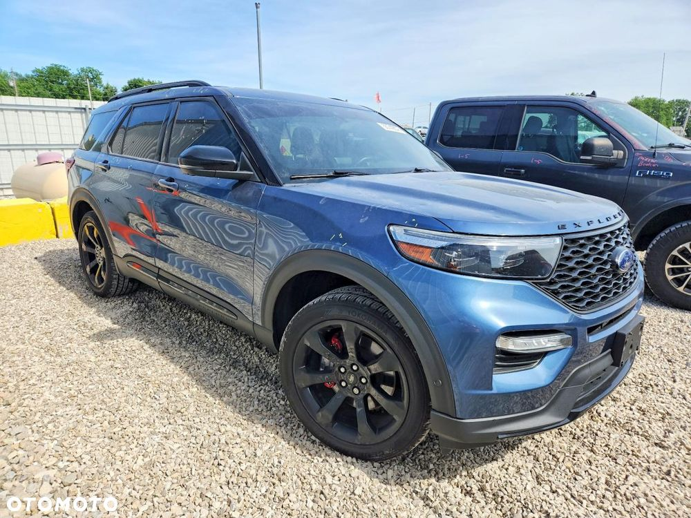
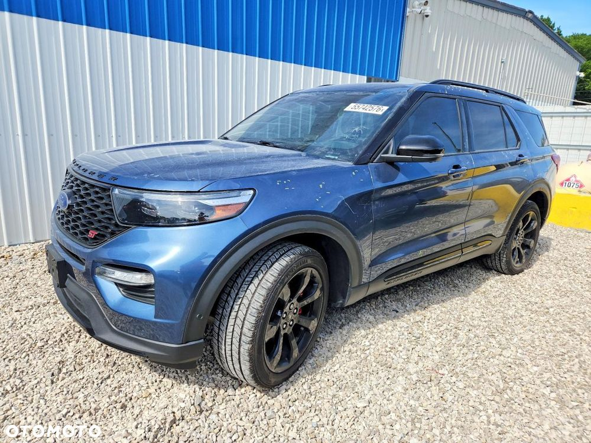
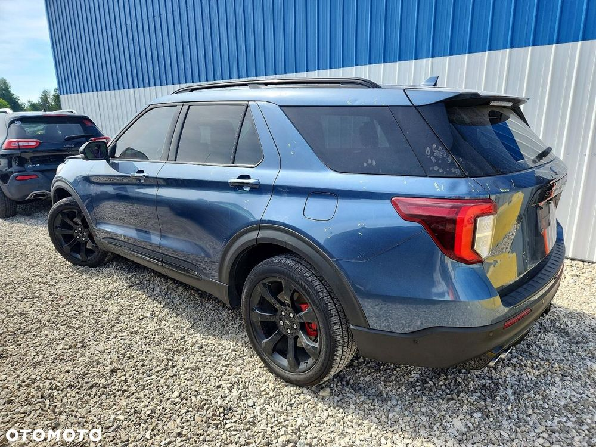
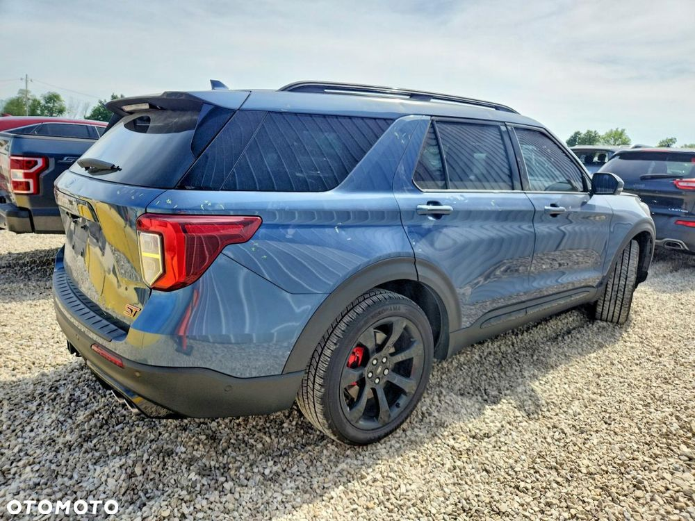
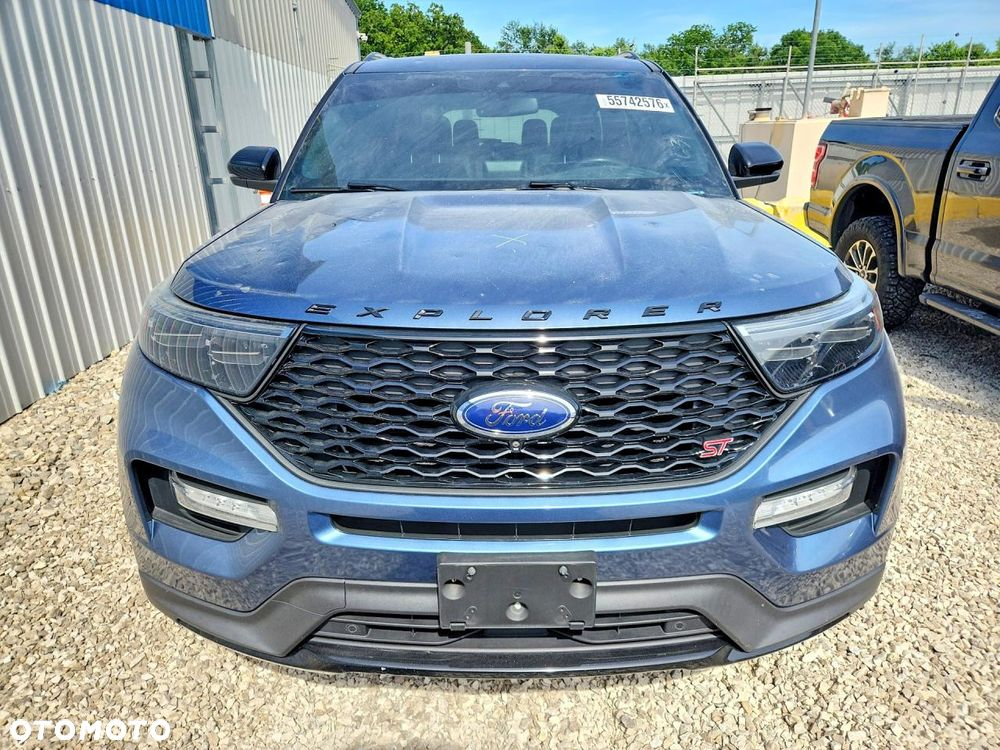
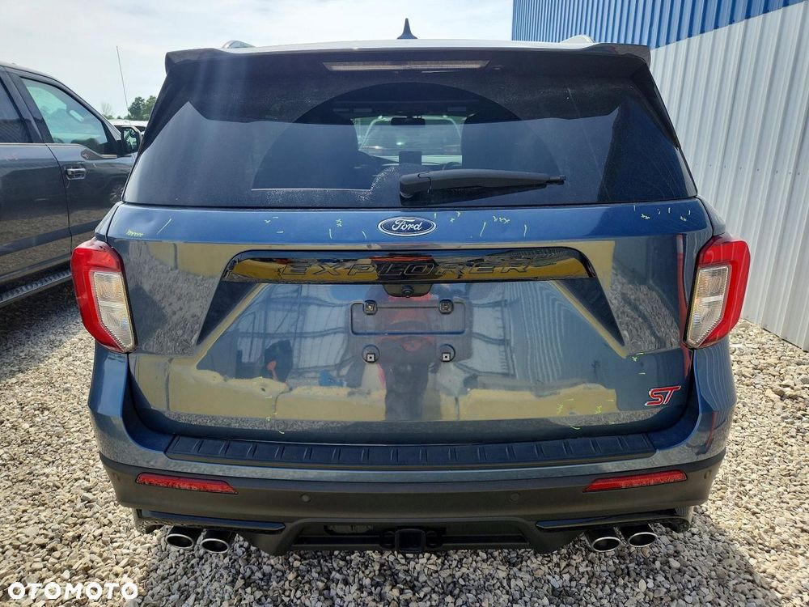
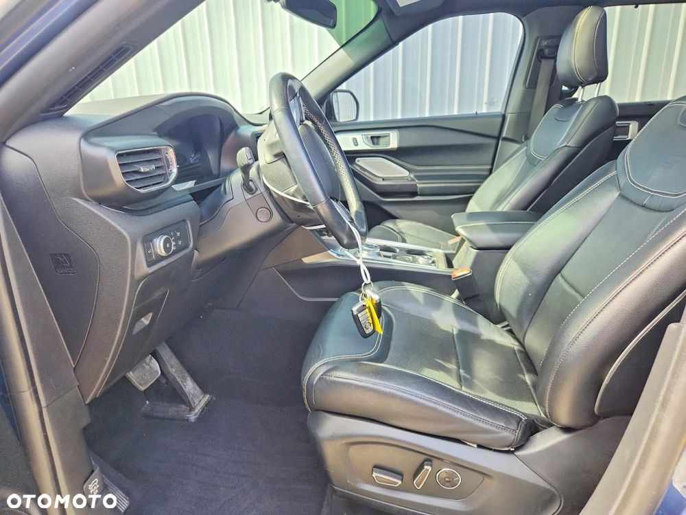
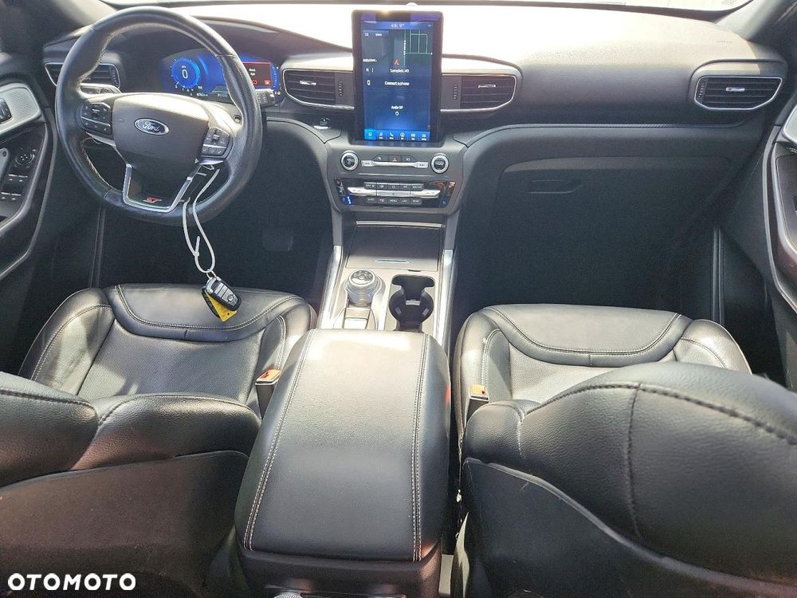
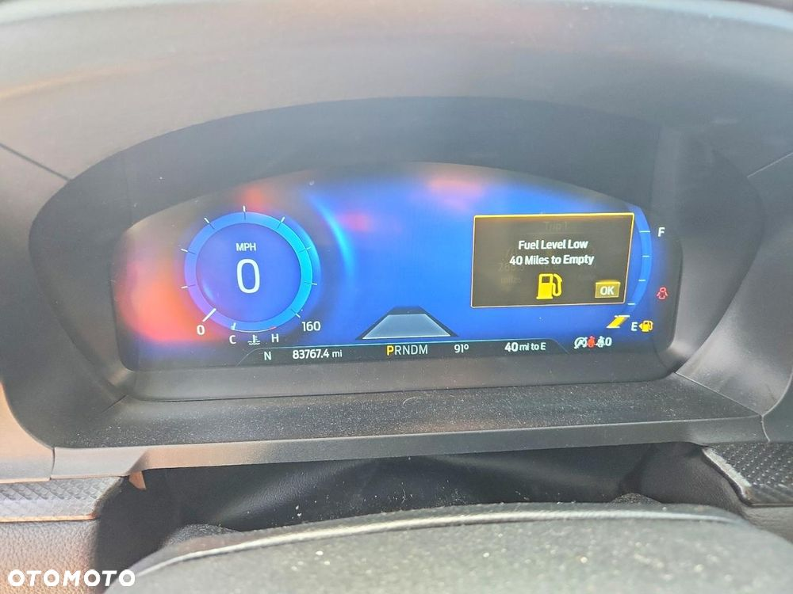
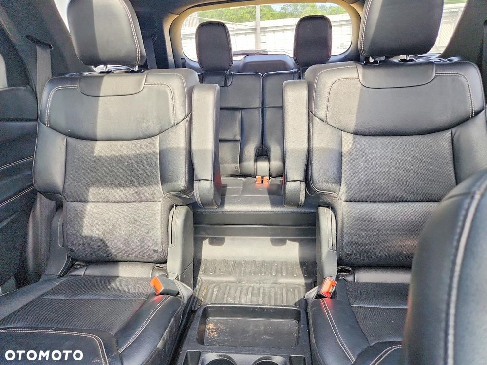
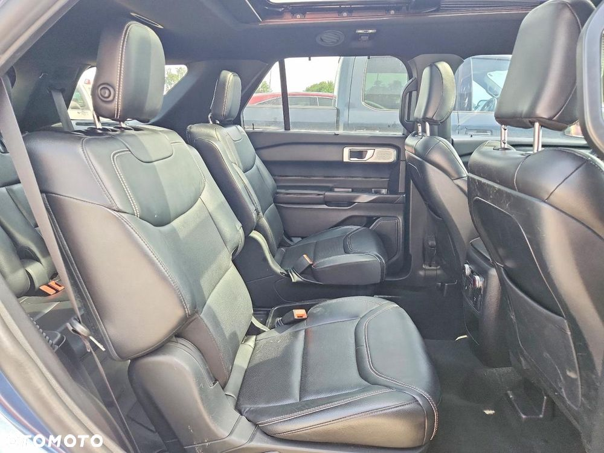
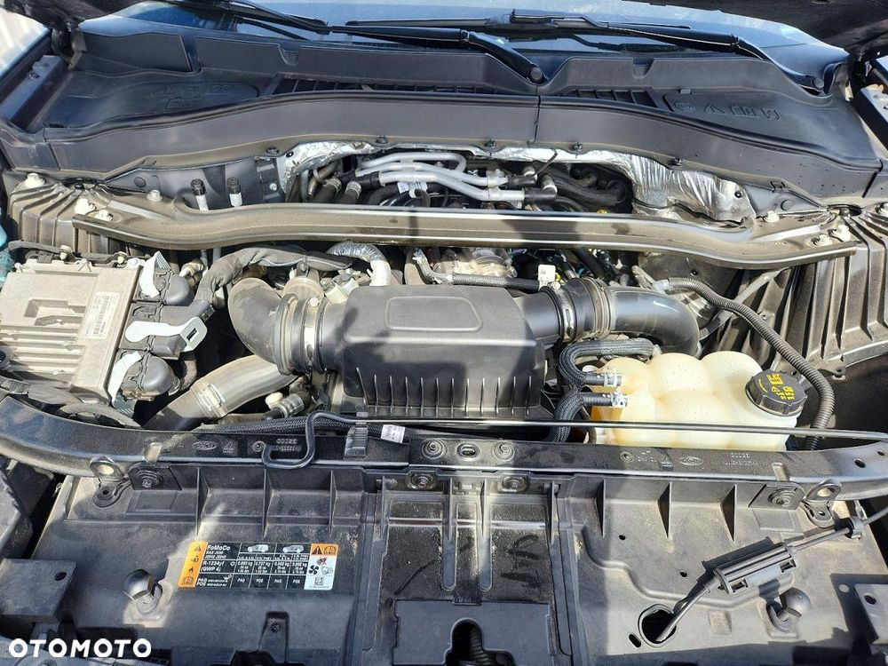
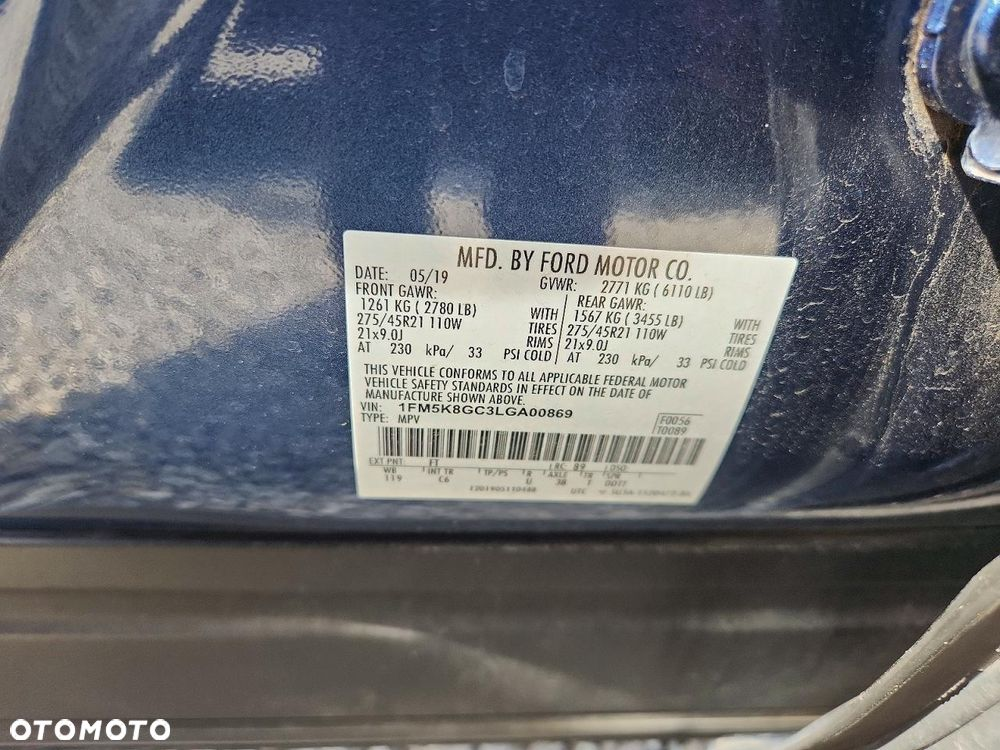